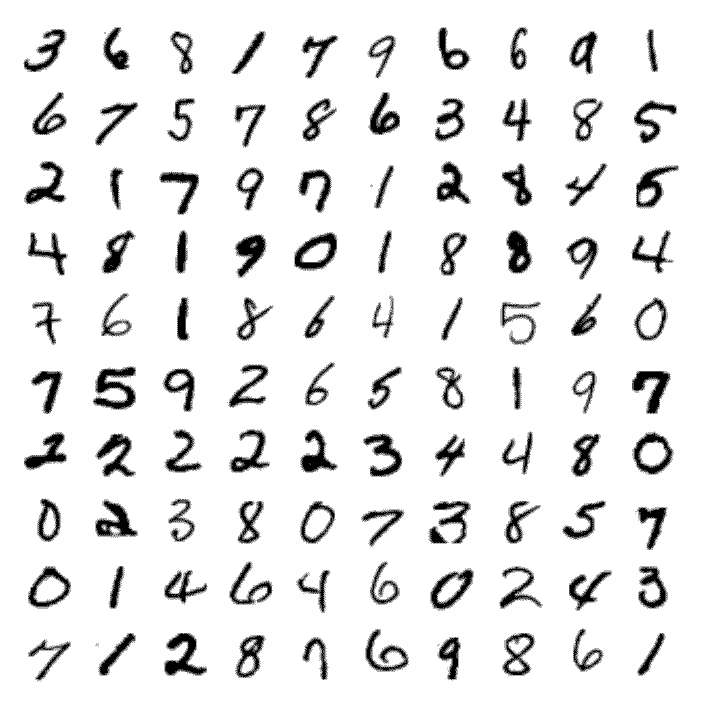
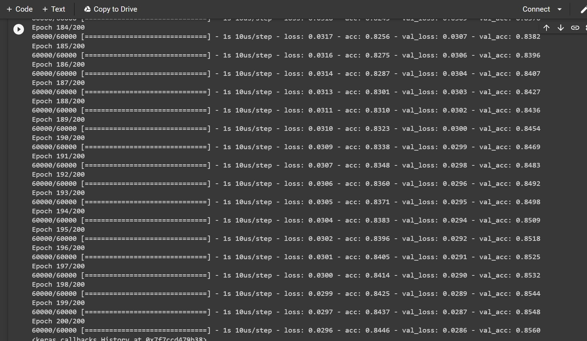

Joshua Moore
Software Engineer

My Projects:
Introduction:
Including a portfolio of my work as an software engineer is in part to show my acquired skills, but also to inspire collaboration in open source projects im involved in or inspire other potentital engineers. Projects im currently involved in are listed on the Home page of this site. Finally, although not posted, this site is itself an attempt to demonstrate my skills, so thanks for visiting!
Deep learning projects Summer 2022
Skills Learned:
Key insight into differences of AI,ML,and DL
Tensorflow and Keras
Google Collaboratory workflow
Github Repository with code developed and notebooks used: Github Repository
This video was a helpful reference: Video Reference Used
Whats the difference? Artificial intelligence, Machine learning, Neural Networks (deep learning)
Artificial Intelligence: Great set of rules.
Machine Learning: Generates rules for us using an algorithm
Neural Networks: A form of machine learning that uses a layered representation of data.
Software and libraries used:
Tensorflow: TensorFlow is a free and open-source software library for machine learning and artificial intelligence
Keras: Keras is an open-source software library that provides a Python interface for artificial neural networks
Google Collaboratory: Colab notebooks allow you to combine executable code and rich text in a single document, along with images, HTML, LaTeX and more
Practical application of skills:
Several small projects from the book "Deep Learning Illustrated":
I forked a repository of google collaboratory notebooks provided by the author, which i then used to go through these guided projects:
1. Shallownet in Keras

Description: An artificial nueral network is created with keras and TensorFlow. This network is used to predict handwritten digits from the MNIST Handwritten digits shown above. The network's architecture consists of an input layer for each 28x28 pixel image of a digit, a single hidden-layer consisting of 64 sigmoid nuerons, and an output layer of 10 softmax nuerons which contain the probabality that the digit is a certain value from 0 - 9.
Steps Taken:
1.1) Import dependencies
import keras
from keras.datasets import mnist
from keras.models import Sequential
from keras.layers import Dense
from keras.optimizers import SGD
from matplotlib import pyplot as plt
1.2) Load MNIST data
(X_train, y_train), (X_valid, y_valid) = mnist.load_data()
X_train.shape
y_train.shape
X_valid.shape
y_valid.shape
1.3) Reformat the data
- Flatten 2d image to 1d - Convert pixel integers to floats
X_train = X_train.reshape(60000, 784).astype('float32')
X_valid = X_valid.reshape(10000, 784).astype('float32')
- Convert integer labels to one-hot
X_train /= 255
X_valid /= 255
n_classes = 10
y_train = keras.utils.to_categorical(y_train, n_classes)
y_valid = keras.utils.to_categorical(y_valid, n_classes)
1.4) Architect the network
model = Sequential()
model.add(Dense(64, activation='sigmoid', input_shape=(784,)))
model.add(Dense(10, activation='softmax'))
model.compile(loss='mean_squared_error', optimizer=SGD(lr=0.01), metrics=['accuracy'])
1.5) Train the network
model.fit(X_train, y_train, batch_size=128, epochs=200, verbose=1, validation_data=(X_valid, y_valid))
Outcomes: The network approaches 86% accuracy after 200 epochs of training as shown below
